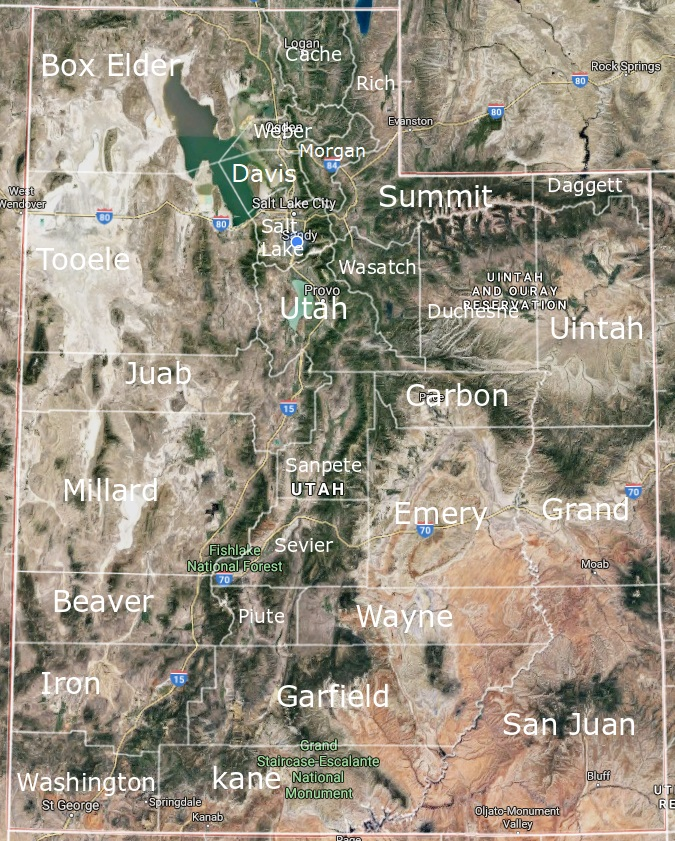

Come and get to know one of the most wonderful states in the USA
Utah is a state in the western United States. It became the 45th state admitted to the U.S. on January 4, 1896. Utah is the 13th-largest by area, 31st-most-populous, and 10th-least-densely populated of the 50 United States. Utah has a population of more than 3 million (Census estimate for July 1, 2016). Urban development is mostly concentrated in two areas: the Wasatch Front in the north-central part of the state, which contains approximately 2.5 million people; and Washington County in Southern Utah, with over 160,000 residents. Utah is bordered by Colorado to the east, Wyoming to the northeast, Idaho to the north, Arizona to the south, and Nevada to the west. It also touches a corner of New Mexico in the southeast.
Click on the map to get more information about the counties in Utah.
The state is a center of transportation, education, information technology and research, government services, mining, and a major tourist destination for outdoor recreation. In 2013, the U.S. Census Bureau estimated that Utah had the second fastest-growing population of any state. St. George was the fastest-growing metropolitan area in the United States from 2000 to 2005. Utah also has the 14th highest median average income and the least income inequality of any U.S. state. A 2012 Gallup national survey found Utah overall to be the "best state to live in" based on 13 forward-looking measurements including various economic, lifestyle, and health-related outlook metrics.
Approximately 62% of Utahns are reported to be members of The Church of Jesus Christ of Latter-day Saints or LDS (Mormons), which greatly influences Utahn culture and daily life. The LDS Church's world headquarters is located in Salt Lake City. Utah is the only state with a majority population belonging to a single church.